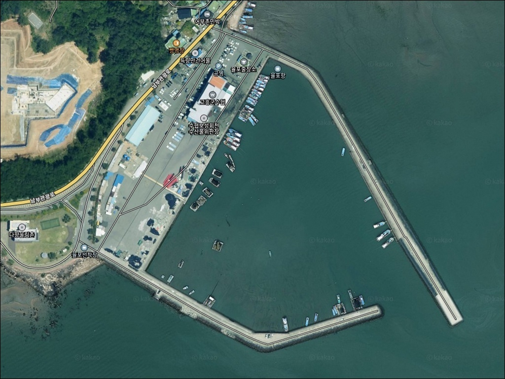
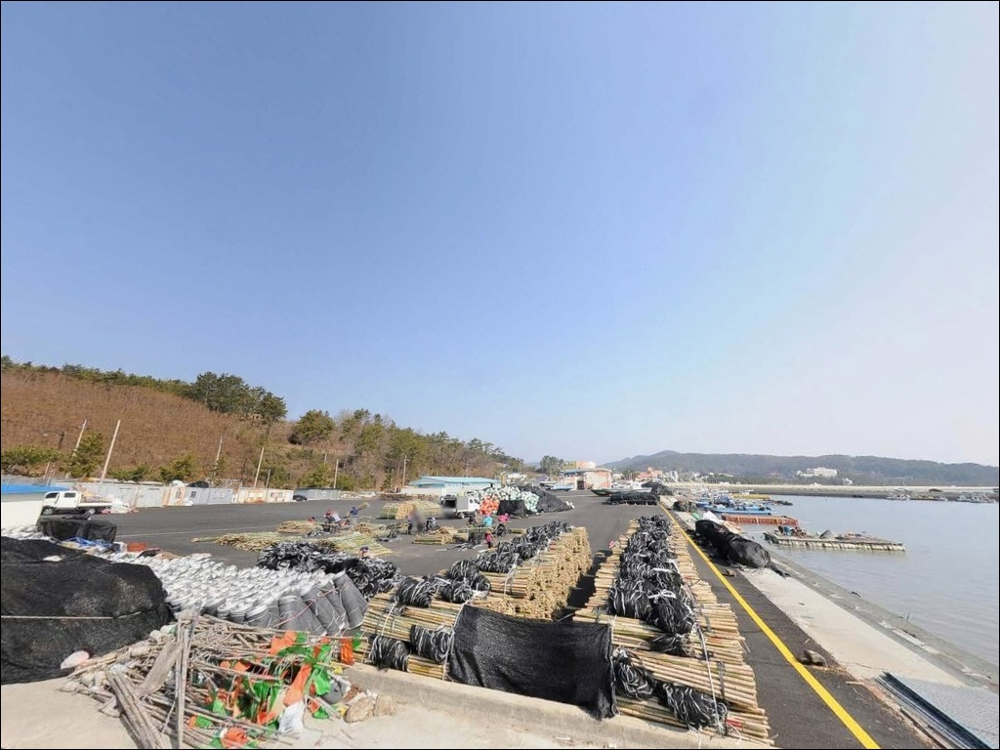
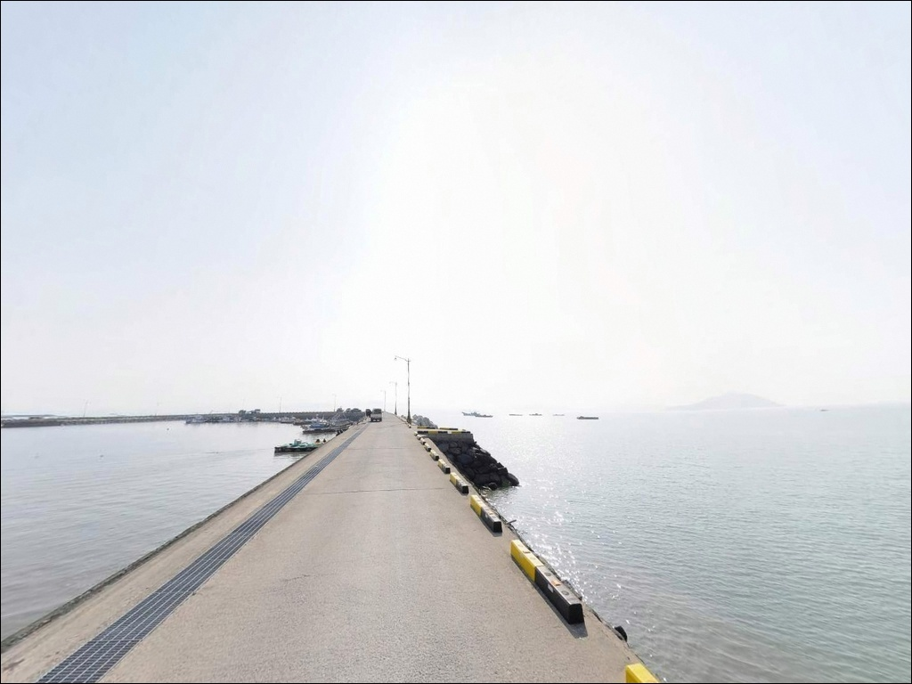
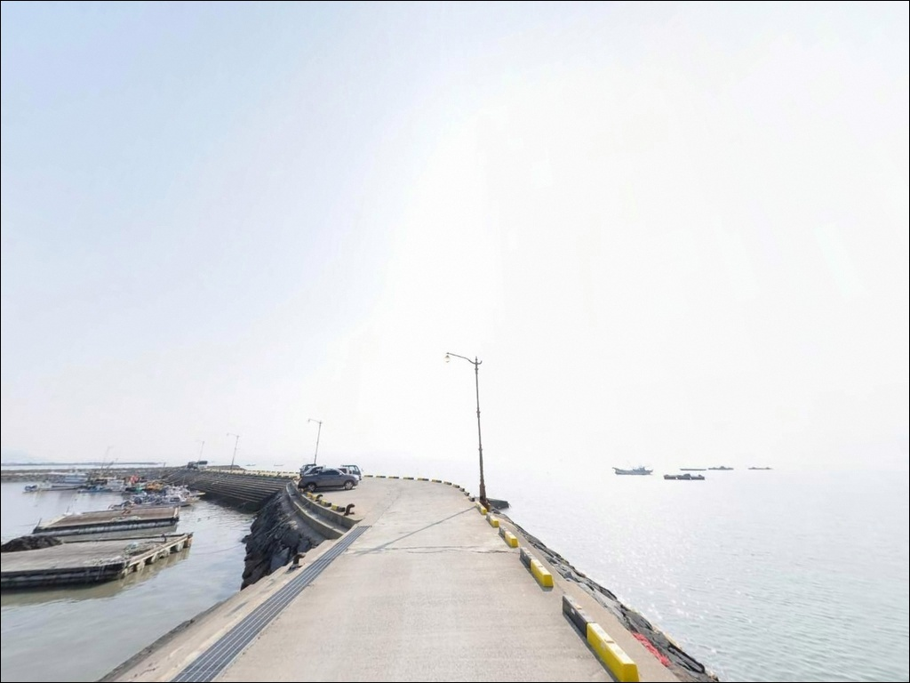
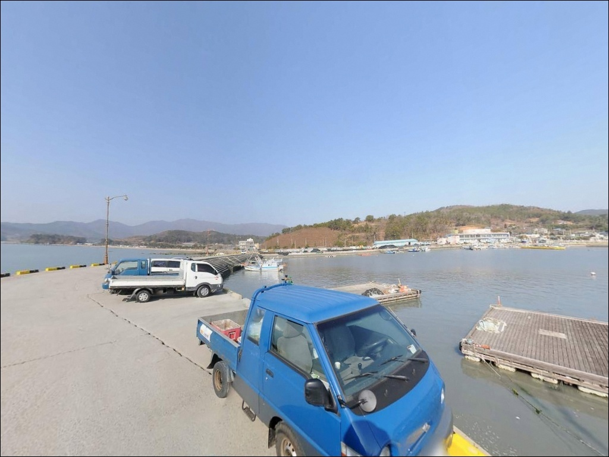
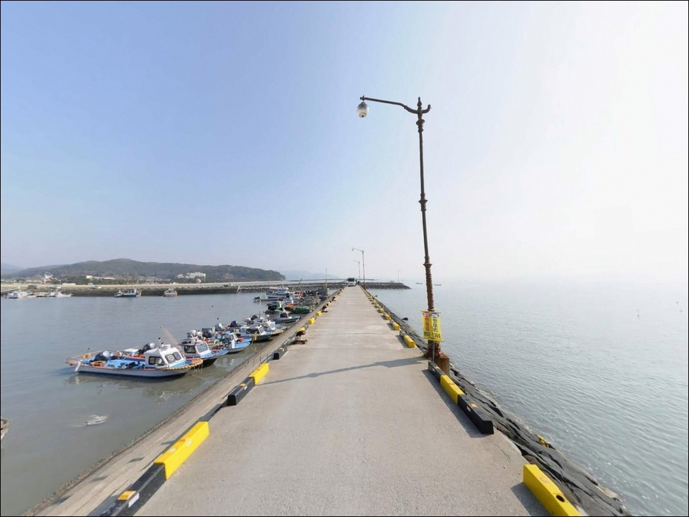
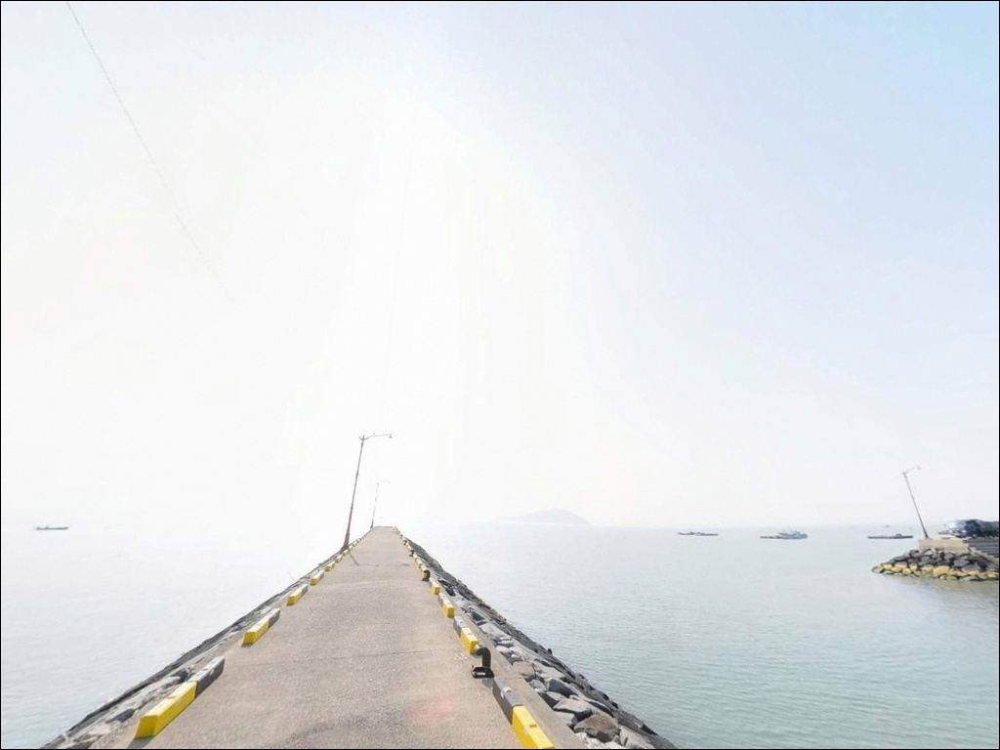
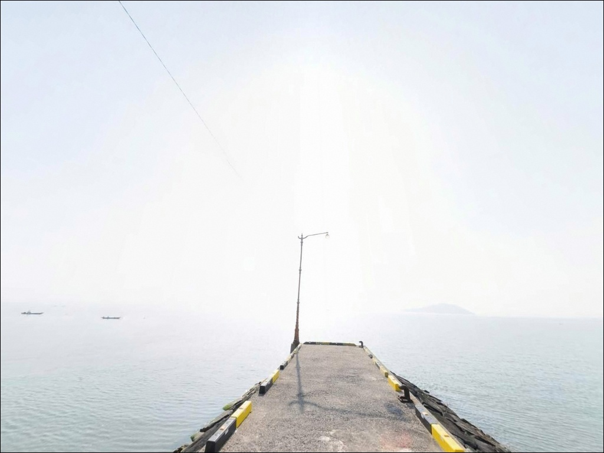
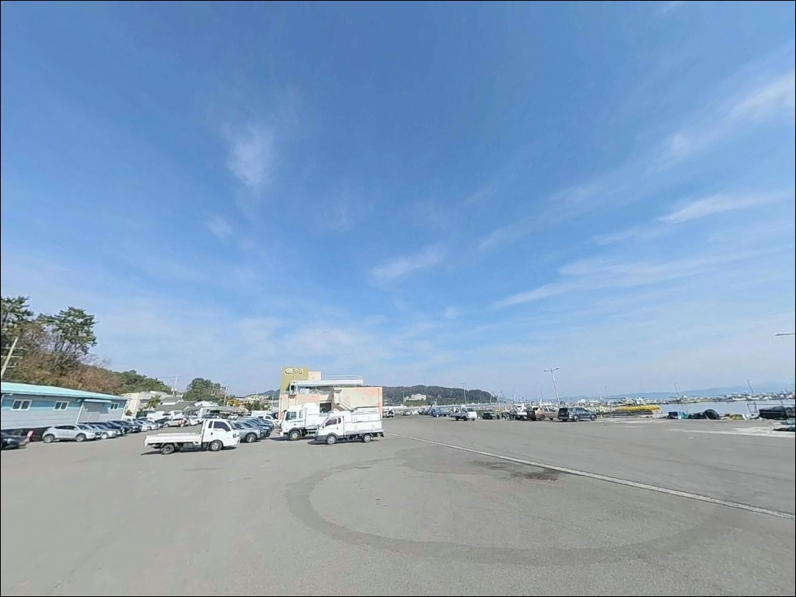

율포항, 율포선착장, 전남 보성군 해안가를 따라 펼쳐진 바다 차박 낚시 스팟 명소


포인트 안내
율포항
전남 보성군 회천면 율포리 476-30
대물 농어 낚시에서
가장 흔한 실수는
빅베이트를 처음부터 던지며
광범위 탐색을 시도하는 것입니다.
빅베이트는 회수 속도가 느려
단위 시간당 탐색 범위가
극히 좁아지기 때문입니다.
어군 위치를 확인하지 않은 채
빅베이트만 고집하면
정작 농어가 있는 구역을
지나치거나 탐색 시간이
턱없이 부족해집니다.
조과 저하의 원인이
루어가 아니라
탐색 순서에 있는 경우가 대부분입니다.
특히 수질이 나빠지는 조건에서는
농어가 예상 포인트를 벗어나
특정 구역에 집중되는 경향이 있어
탐색 전략을 바꾸지 않으면
하루 종일 빈 포인트만
반복하는 결과로 이어집니다.
이 글은 쉘로우 크랭크 탐색 전략,
수질 악화 시 포인트 선택 기준,
빅베이트와 빅 펜슬 운용법,
슬로우 다운 전략까지
단계별 패턴 피싱 전략을
중심으로 정리합니다.
이 글은 폐쇄성 기수역과 간척호권에서의
농어 빅베이트 운용 전략에 집중합니다.

1. 빅베이트 투입 전,
쉘로우 크랭크로 탐색부터 해야 하는 이유
빅베이트는 집어력이 강하지만
탐색 도구로는 부적합합니다.
루어 자체 무게가 크고
회수 동작이 느리기 때문에
같은 시간 안에 확인할 수 있는
포인트 수가 크게 줄어듭니다.
쉘로우 크랭크는 수심 1~2m권을
빠르게 탐색할 수 있어
짧은 시간에 농어의 유무와
반응하는 개체 사이즈를
파악하는 데 유리합니다.
쉘로우 크랭크 탐색으로
어군 위치를 좁힌 이후에
빅베이트를 투입하면
시간 낭비 없이 대물 공략으로
바로 전환할 수 있습니다.
시간이 제한된 조건일수록
탐색과 공략을 분리하는 전략이
필수입니다.
탐색 없이 빅베이트만 고집하면
어군을 발견하지 못한 채
시간이 소진되는 결과가
반복될 수밖에 없습니다.

2. 수질 악화 시 농어가 집중되는
포인트의 조건
본류 수질이 나빠지는 조건에서
농어는 오염수가
직접 유입되지 않는 구역으로
이동하는 경향이 있습니다.
수로 막다른 곳, 만의 안쪽,
수문 이면처럼
외부 수질 변화에서
차단된 구역이 핵심 포인트가 됩니다.
일반적으로는 물이 정체된 구역을
먼저 배제하는 경향이 있지만
수질 악화 상황에서는
오히려 그런 구역이 상대적으로
깨끗한 물을 유지하기 때문에
농어가 집중됩니다.
여름철 녹조나 집중 강우 이후
수질이 급격히 나빠질 때는
지천 새물 유입구나
수문 주변도
함께 확인해야 합니다.
서해 대형 간척호권과
남해 폐쇄성 만권은
조석 간만 차가 크기 때문에
조류 변화 시간에 따라
수질 분포가 달라집니다.
물때표를 기준으로
새물 유입 타이밍을
사전에 계산해두는 것이
포인트 선택의 효율을 높입니다.


3. 보일 상황에서 대물을
선별 공략하는 방법
보일이 발생한 수면 근처에는
소형 개체가 집중되어 있습니다.
대물은 보일의 주변부나
1m 아래 수심층에 잠복하는
경향이 있기 때문에
루어의 수심층을 낮추면
소형 개체의 간섭을 줄이고
대물에 접근할 수 있습니다.
소형 베이트피쉬가 많더라도
루어 사이즈를 줄이지 않거나
오히려 키우는 전략이 유효합니다.
대형 루어는 소형 개체의
반응을 억제하면서
대물의 시각적·청각적 자극을
극대화하는 역할을 합니다.
루어 크기 유지 또는 업사이징과
수심층 조절을 함께 적용하면
보일 상황에서 대물을
선별하는 확률이 높아집니다.
보일에서 소형 개체만 반응한다면
해당 구역을 과감히 벗어나
보일 주변부로 포인트를 이동하거나
쉘로우 권역의 지형 변화 지점으로
탐색 범위를 바꾸는 것도
전략적 판단 중 하나입니다.

4. 빅 펜슬로 심층 농어를
수면으로 끌어올리는 도발 전략
빅 펜슬 베이트는
수면에서 강한 파동과 소음을
발생시키는 탑워터 루어입니다.
이 파동과 소음은
심층에 위치한 농어를 자극해
수면으로 부상시키는 효과가 있습니다.
스스로 올라오지 않는
저활성 대물 농어를
도발하는 데 특히 유용합니다.
수면이 잔잔한 경면 조건에서는
빅 펜슬의 파동이
더 멀리 전달되기 때문에
집어 효과가 극대화됩니다.
조류 경계선(조목) 주변이나
브레이크 라인(수심 급변 구역) 상단에서
빅 펜슬을 운용할 때
심층 농어의 반응이 높아집니다.
빅 펜슬 운용 시
루어가 수면에서 규칙적인 소음을
반복 발생시킬 수 있도록
일정한 리듬을 유지합니다.
소음 발생 간격이 불규칙하면
심층 농어가 반응하기 전에
루어가 포인트를 벗어나
유인 효과가 반감됩니다.

5. 슬로우 다운으로 소형 개체
간섭을 줄이는 운용법
소형 개체는 빠르게 움직이는 루어에
리액션으로 반응하기 쉽습니다.
리액션 속도에서
소형 개체만 반응하는 상황이 반복된다면
루어 속도를 낮추는 것이
대물 선별의 출발점이 됩니다.
루어 속도를 낮추면
대물이 루어를 충분히 확인하고
공격할 시간이 생기기 때문에
소형 개체의 입질은 줄고
대물 바이트 비율이 높아지는
효과가 나타납니다.
이 전략은 바이트 빈도 자체는
줄어들 수 있기 때문에
포인트에 대물이 있다는
판단이 선 이후에 적용합니다.
슬로우 다운 전략을
어군 밀도가 높은 구역에서
무분별하게 적용하면
오히려 소형 개체의 계속된 입질로
대물 공략 시간이 줄어듭니다.
소형 개체가 집중된 구역은
과감히 벗어나
지형 변화가 있는 쉘로우 구역으로
이동하는 판단이 더 효율적입니다.


6. 빅베이트 농어 낚시에 적합한
PE 라인 선택 기준
빅베이트는 루어 자체 무게가 크기 때문에
라인에 가해지는 하중이
일반 루어 낚시보다 높습니다.
이 조건에서 매듭 강도가 낮은 라인은
결속 부위에서 강도가 급격히 떨어져
랜딩 중 라인 파손 위험이 있습니다.
조작성이 좋은 라인은
빅베이트의 액션 전달도
안정적으로 유지해줍니다.
줄이 적당히 유연하면서도
하중 분산이 균일하게 이루어지는
캐스팅 전용 PE 라인이
빅베이트 방식에 적합합니다.
내마모성이 검증된
8사 또는 12사 PE 라인을
기준으로 선택하는 것이 기본입니다.
라인의 매듭 강도는
어떤 환경에서도 안정적으로
유지되어야 합니다.
특정 조건에서만 높은 성능을 보이는 라인보다
캐스팅, 루어 조작, 랜딩 등
모든 상황에서 균일한 성능을
발휘하는 라인이 장기적으로
빅베이트 낚시에 유리합니다.

7. 훅 각도와 랜딩 실패를
줄이는 핵심 포인트
대물 농어와의 파이팅에서
털림이 발생하는 주된 원인은
훅이 정확한 각도로 박히지 않은 채
파이팅이 시작되는 경우입니다.
힘의 방향이 바뀌는 순간
훅이 빠지기 쉬운 상태가 됩니다.
훅셋 이후 로드 각도를
일정하게 유지하는 것이
털림 방지의 핵심입니다.
특히 대물이 방향을 전환할 때는
라인 장력을 급격히 풀지 않고
드랙으로 안정적으로 제어해야
훅이 빠지는 위험을 줄일 수 있습니다.
훅 포인트가 무뎌진 상태에서는
정확한 훅셋 자체가 어려워
털림 빈도가 높아집니다.
출조 전 훅 포인트 상태를
반드시 점검하고
무딘 훅은 즉시 교체하는 것이
랜딩 성공률을 높이는
가장 기본적인 준비입니다.

단계별 전략이 악조건에서
대물 농어의 확률을 결정한다
포인트 안내
폐쇄성 기수역이나 간척호권에서
대물 농어를 공략할 때
탐색과 공략을 명확히 분리하는 것이
조과의 출발점입니다.
쉘로우 크랭크로 어군을 먼저 확인하고
수질 조건에 따라
포인트 선택 기준을 바꾸는 것이
시간을 낭비하지 않는 전략입니다.
보일 상황에서는
루어 크기를 유지하거나 키우고
수심층을 1m 아래로 낮춰
대물만 선별합니다.
빅 펜슬로 심층 농어를 도발하고
슬로우 다운으로 소형 개체 간섭을 줄이는 흐름이
단계별 패턴 피싱의 핵심입니다.
PE 라인 매듭 강도와 훅 포인트 상태는
출조 전 반드시 점검해야
대물 찬스를 살릴 수 있습니다.